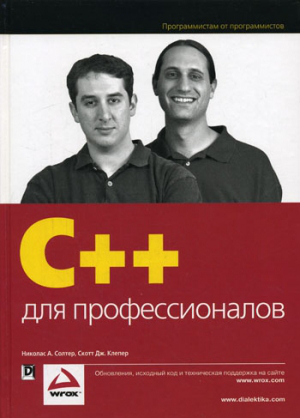
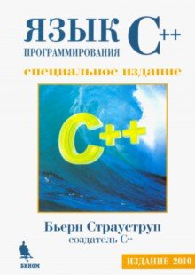
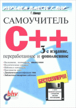
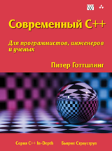
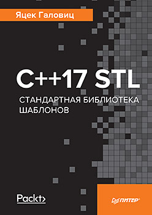

У каждого программиста C++ свой путь к этому языку и к его познанию. Есть счастливчики, которым выпал шанс начать изучать язык с хорошим методистом, который знает и сам язык, и умеет подавать материал. Если человеку посчастливилось оказаться в месте, где существует научная школа со сформированным костяком специалистов и с устоявшимися традициями обучения, то это значит, что дальнейший путь в мире АйТи будет таким же легким как полет на самолете по сравнению с преодолением этого же расстояния на велосипеде.
К сожалению, не всем выпадает такое счастие. Есть люди, которые идут к плюсам через тернистые тропинки самостоятельного познания. Действительно, если подумать и оценить, сколько, например, в России центров компетенций по C++, то окажется, что их не так уж и много. В большинстве своем эти очаги знаний сосредоточены в крупных городах: Москва, Санкт-Петербург, Новосибирск, Нижний Новгород... Но Россия - страна большая, и люди, стремящиеся к C++ живут не только в перечисленных миллионниках. Что делать им? Ответ один: им остается только Интернет и книги.
Наверно, никто не будет спорить с тем, что книги дают более фундаментальные знания, чем чтение интернет-ресурсов. Знания из Интернета - это больше практика, а книги - это теория. И в этой заметке я буду говорить именно о книгах. Если быть еще более точным - о книгах на русском языке. Дело в том, что я считаю, что сложные вещи надо понимать и осознавать на том языке, на котором думаешь. Да, здесь есть проблема в том, что материалы на русском появляются с запозданием: появление русскоязычных материалов запаздывает на несколько лет относительно англоязычного оригинала. Еще существует проблема точности и правильности перевода, но она справедлива для "проходных" изданий и мало касается книг фундаментальной направленности. В конце концов, в русскоязычной литературе, благодаря стараниям многих людей (и переводчиков в частности), сформировалась устойчивая терминология, которая неплохо отображает именование предметной области C++ на русском языке, не скатываясь в тотальное использование англицизмов. Кстати, я пишу именно про бумажные книги. И делаю это потому, что в электронном виде сложный текст я воспринимаю с трудом. Электронные книгочиталки тут не помошники: они заточены на "линейное" чтение художественной литературы, а активная работа с книгой превращается в изощренную пытку.
Мы знаем, что язык C++ постоянно дорабатывается и изменяется. Стандарт 11-го года был переломным моментом после многолетнего затишья, когда казалось, что плюсы так и останутся динозавром в бурлящем море языков программирования. Сейчас 2019 год, а с литературой на русском языке про стандарт C++11 и выше, по моим наблюдениям, только сейчас стала исправляться ситуация: начиная где-то с 2017 года, наконец-то, появилось несколько книг.
В любом случае, сейчас у меня сложилась библиотечка из нескольких книг по C++, которая меня выручает в различные моменты времени. Из-за специфики моей работы, мне периодически приходится отрываться от C++ программирования, а спустя многие месяцы снова возвращаться. Что происходит со знаниями и навыками, если хотя бы полгода ты не касаешься какого-либо предмета, и голова забита совсем другими технологиями? Правильно, происходит забывание, а что еще хуже - искажение того что помнишь. В свою очередь, язык C++ настолько сложный, с неимоверным ворохом тонкостей, что он не прощает переключения на другие виды деятельности. Поэтому крайне важно уметь быстро восстанавливать знания и вспоминать те вещи, которые у тебя замылились или просто забыты.
В моей библиотеке по C++ есть два вида книг: полный шлак, о котором даже упоминать не хочется, (хорошо что они до 2011-2012 года выпуска и давно потеряли свою актуальность), и достойные книги, которые я мог бы рекомендовать всем, кому приходится работать с языком. Вот про достойные книги я и хотел бы поговорить далее. Но перед тем, как начать перечислять книги, я хотел бы сказать немного о другом.
Мое отношение к языку C++ весьма потребительское: я отношусь к нему просто как к надежному инструменту, который может обеспечить долгосрочное и относительно беспроблемное существование кода разработок. И в разработке меня больше интересует организация структуры приложения, объектно-ориентированная декомпозиция предметных областей, принципы снижения сложности разрабатываемой системы. Я не храню в голове тонкости синтаксиса языка, если редко использую ту или иную возможность, так как информацию об этом всегда можно посмотреть в справочнике. Новые фишки языка я использую только тогда, когда осознаю их действительную необходимость и начинаю понимать, что они из себя представляют. У меня очень утилитарный подход к разработке: меня прежде всего интересует доведение очередного дела до логического конца вместо теоретической возможности сделать лучше, путем переписывания половины проекта с учетом новых возможностей. Другими словами, в своей работе я использую понятное мне подмножество языка, и медленно дрейфую в ту сторону, куда движется индустрия. С учетом вышесказанного, у меня и сформировался тот набор книг, про которые я буду рассказывать ниже.
* * *
Начнем с основ, куда же без них.
Николас Солтер, Скотт Клепер: C++ для профессионалов

Я долго охотился за этой книгой. По всей видимости, последнее бумажное издание было в 2006 году. В конце концов я ее купил в букинистическом онлайн-магазине. Книга написана очень качественно, подробно, имеет сбалансированные, точные и понятные примеры кода. Помимо хорошей подачи материала, книга подкупает тем, что авторы не являются фанатичными пользователями плюсов, и достаточно критично смотрят на его недостатки:
"Синтаксис вызова конструкторов по умолчанию отличается от синтаксиса вызова обычных функций, чего не скажешь о других конструкторах... Дело в том, что компилятор воспримет строку как объявление функции... Не стоит тратить много времени на размышление о том, почему в C++ требуется различный синтаксис для создания объектов конструкторами по умолчанию в стековой памяти и в области "кучи". Это просто один из аспектов C++, которые делают этот язык таким увлекательным и полезным для развития памяти программиста."
А чего только стоит наличие целого раздела "Причуды и странности С++"!
Эта книга прекрасно подходит и для того чтобы глубоко "въехать" в язык "с нуля", и для того, чтобы быстро повспоминать основные моменты C++, если они были подзабыты. Данная книга описывает самый базис языка C++, в ней нет ничего про C++11 и выше. Зато в ней есть все, что нужно знать про фундаментальные свойства C++, от синтаксиса языка до стиля разработки, от обобщенного кода шаблонов, STL-контейнеров и итераторов, до шаблонов проектирования.
Бьерн Страуструп: Язык программирования C++ (специальное издание 2011 г.)

Для того, чтобы понять смысл и внутреннюю структуру C++ как творения человеческого гения, хорошо бы понимать, что происходило в голове у автора языка. Поэтому каждому C++ программисту стоит иметь такую книгу в обязательном порядке. Эта книга вышла в 2011 г. (третье русское издание), но в качестве основы был взят текст аж из 2000 г. Соответственно, в ней нет упоминания даже стандарта C++03. Книга представляет собой предельно полное описание языка C++ более чем на тысячу страниц.
Книга ценна еще и тем, что переводчик Николай Николаевич Мартынов очень тщательно подошел к своей работе: он выверил всю терминологию, исправил все неточности, обнаруженные за 10 лет и самим Страуструпом в оригинальном тексте, и ошибки, допущенные в предыдущем переводе на русский язык. Воистину, это титанический труд, имеющий выжное значение для русскоязычной аудитории.
Что касается новых стандартов, у Стауструпа есть книга 2016 года "Программирование. Принципы и практика с использованием C++". В ней, в частности, рассказывается про программирование с использованием стандартов C++11 и C++14. Но, к сожалению, у меня этой книги нет, и я не могу рассказать о ее достоинствах.
Герберт Шилдт: Самоучитель С++

Эту книгу можно рассматривать только как дополнение к двум вышеприведенным. Третье издание датируется 2003 годом, и в нем, естественно, нет упоминания даже стандарта C++03. Некоторые аспекты языка в ней объясняются хорошо, некоторые достаточно поверхностно. Я ее изредка использую, и в основном смотрю в ней раздел по стандартной библиотеке шаблонов. В нем все достаточно кратко написано, есть сводная таблица.
Далее идут книги, в которых упор сделан на описание "новых" стандартов C++11, C++14, C++17.
Питер Готтшлинг: Современный C++ для программистов, инженеров и ученых

Очень неоднозначная книга, и единственное её достоинство в том, что в ней сделана попытка описать современный C++, учитывая стандарты C++03, C++11 и C++14. Вроде бы в ней есть все разделы, необходимые для подробного описания языка: основы C++, Классы, Обощенное программирование, Библиотеки, ООП... Но повествование какое-то рваное, странные скачки от поверхностного описания синтаксиса к сложным концепциям языка, приправленные решениями задач высшей математики.
Все это сопровождается отсутствием единого стиля кодирования: только что класс описывался через struct, а следом похожий класс описывается через class, причем ни о каком изменении в доступности членов речи не идет. Даже простые вещи, вроде объявления указателя, на одном развороте книги могут быть написаны со "скачащей" звездочкой:
int* y=new int[10];
...
float * v=new float[4];
...
double *x=new double[3];
В общем, книга оставляет ощущение недоделанности и грязного кодирования, при том что темы, поднимаемые в ней, весьма серьезные (например, метапрограммирование и реализация оптимизаций через шаблонные классы с развертыванием векторных выражений). Я ее могу рекомендовать только из соображения, что в этой книге есть много материалов по "новому" подмножеству C++. И еще она может пригодиться для программистов, работа которых действительно связана с математикой и вычислениями.
Яцек Галовиц: С++17 STL. Стандартная библиотека шаблонов

Прекрасный пример того, как не надо называть книги (оригинальное английское название - C++17 STL Coockbook). По названию может сложиться впечатление, что книга рассказывает о стандартной библиотеке шаблонов в C++17. На самом деле, в книге есть разделы по описанию всех новых возможностей C++17 безотосительно библиотеки шаблонов.
Книга написана (переведена) хорошим языком, примеры кода очень простые и выразительные. Автор не нагнетает сложностей, а спокойно и последовательно рассказывает о современных языковых инструментах. Это первая, и пока что единственная книга, в которой внятно излагаются нововведения стандарта C++17, с экскурсом о том, что было в стандартах C++11 и C++14. Вообще, издательство "Питер" славится высоким качеством перевода и грамотным подбором самих книг для перевода. В очередной раз они сработали хорошо.
Важное замечание. В этой книге нет основ языка C++, в ней рассказывается только о нововведениях в новом стандарте. Она нацелена на людей, которые уже знают более старую версию языка.
Лайфхак: самый выгодный способ заказать эту книгу - это купить ее непосредственно на сайте издательства "Питер". В момент оформления заказа можно указать промокод "С++17 STL", и станет доступно 25% процентов скидки.
* * *
Я описал здесь книги, которыми я сам постоянно пользуюсь. Возможно, это не самый правильный набор литературы по плюсам, но меня зацепили именно они. Кстати, я не оставляю надежду найти раритетные издания Брюса Эккеля «Философия С++» (1-й том) и «Философия С++. Практическое программирование» (2-й том). Они не переиздавались достаточно длительное время, и в букинистических онлайн-магазинах их просто нет.